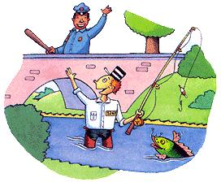

Getting off the hook.
"Beautiful," he exclaimed. "But you mean to tell me you keep these fish like pets just to make bambini to put in lakes and. . . what do you call. . .little rivers?"
"Streams," I translated.
"Streams. But then fishermen have to throw them back if they are too small?"
"Yep. And sometimes they put back everything they catch."
"Throw everything back? Ma, che pazzie."
"I guess it does sound crazy," I agreed.
I should explain something here. Franco comes from a fishing village in southern Italy. His father fed their family by rowing out on the Mediterranean every day in an 18-foot open boat.
"It's called 'catch-and-release,'" I explained as we headed towards the Allegan Forest. "Some streams, or even only parts of a stream, are designated as catch-and-release."
Cousin Franco cut me a sidelong, skeptical glance.
"And we even have 'no harvest' lakes, where you can fish but not keep what you catch."
"But why?"
"Because - for a lot of reasons. We want the fish to get bigger so they're more fun to catch. So kids can be sure to catch some fish the first time they try it. So fishermen can practice new techniques, new baits. That's why."
Franco stared snatched a few glimpses of dogwood in the early-spring woods. "Sounds like you make a - what do you call - a museum for fish?"
"Aquarium."
" Si - aquarium - for children to come and catch big fish. Then the father, he takes a picture of the fish. They put the picture in the newspaper. That fish, if he's not so smart, gets caught again and again. Pretty soon everybody recognizes him... like a movie star. Poor fish. How many times does he have to be caught before he is allowed to die with dignity? To fulfill his purpose in a delicious zuppa di pesce?"
Franco unwrapped the burger we had picked up in town and took a big bite. "Ummm, good," he pronounced.
After a long pause: "What would happen," he asked, with a twinkle in his eye, "if every once in a while, when you eat a hamburger, you get a big pain in your mouth and something pulls you out of the restaurant? You kick and fight. Then, before you know it, you're back in the restaurant. After a while, maybe you don't want to eat there anymore. Maybe you won't want to eat ham burgers anymore. You lose weight. You get skinny."
I laughed. "You think catch-and-release fish become paranoid anorexics?"
Franco shook his head again. "I don't know about the fish. I only know someone is making money keeping fish alive and away from the frying pan. Such a deal!"
"Where are you going with this?" I asked.
"What you told me is, some guys get money to make baby fish. Then they put these anchovies in the water somewhere. Other people pay for a license to catch these fish over and over, and put them back in the water. Only in America do you make money and spend money putting fish back in the water! Wait till I try to explain this to my father the fisherman."
Before long we arrived at the dunes north of Saugatuck for my cousin's first look at Lake Michigan. Strolling along the access trail, I pointed out a former monastery that had been converted into a state prison.
"Our jails are so crowded," I explained, "that we often have to let prisoners out before their sentences are served because there just isn't enough room for them all."
"Just like the movies we see about America, huh?" my cousin remarked. "Cops and robbers. Al Capone. Jimmy Cagney. Shoot-and-chase. Bang bang. Go to jail. Get out. Start all over," Franco observed. "Seems to me you Americans are in love with this 'catch-and-release' idea."
|
 |
|
|